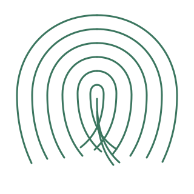

المِهْباش
أداة خشبية منقوشة تُستخدم لطحن القهوة العربية، وترتبط بدعوة الضيوف والكرم.
مصطلح تراثيمنصة أردننا هويتنا – الأصالة بروح عصرية.
منصة رقمية جامعة تهدف إلى حفظ وتوثيق التراث المادي والشفهي الأردني، والربط بين أصل التاريخ وتطلعات المستقبل.

انطلاقاً من إيماننا المطلق بأن التراث هوية، والانتماء فعل وعمل، نُظّمت سلسلة مبادرات «أردننا هويتنا» بإشراف فريق بصمة اليرموك في جامعة اليرموك.
وُلدت هذه السلسلة لتتجاوز الفعاليات الموسمية إلى مسار وطني ومجتمعي مستدام، يهدف إلى ترسيخ الهوية الوطنية الأردنية، وإحياء التراث المادي والشفهي، والربط بين أصالة الماضي وابتكارات الشباب الرقمية. نحن نؤمن بأن الحفاظ على التراث يبدأ بالوعي، وينتقل بالتطبيق، ويستمر بشغف الشباب.
اكتشف مفرداتنا وأمثالنا وأزياءنا وأطباقنا الشعبية. استخدم البحث أو اختر تصنيفًا لتصل إلى ما تبحث عنه.
أداة خشبية منقوشة تُستخدم لطحن القهوة العربية، وترتبط بدعوة الضيوف والكرم.
مصطلح تراثيهودج الجمل المزيّن بالأقمشة، استُخدم لنقل النساء بأمان وراحة أثناء الترحال.
مصطلح تراثيقطعة قماشية دائرية توضع على الرأس لتسهيل حمل أواني الماء والجرار الفخارية.
مصطلح تراثيخنجر أردني تقليدي يُحمل على الحزام، ويرمز للنخوة والشهامة والشرف.
مصطلح تراثيأدوات زراعية قديمة استخدمها الأجداد في حراثة الأرض وفلاحتها.
مصطلح تراثيرمز الأصالة والشموخ، يتميز بالتهديب اليدوي الأبيض ويزين الرأس الأردني.
زي وتراث ماديالثوب التراثي للمرأة الأردنية؛ تطريزه اليدوي يختلف بين المحافظات، مثل المعاني والسلطي وثوب شمال الأردن.
زي وتراث ماديغطاء رأس تراثي للنساء في بعض مناطق الأردن، تنوّعت أشكاله وطرق ارتدائه.
زي وتراث مادياللحم والجميد الكركي والأرز؛ رمز الكرم والهوية الوطنية الأردنية، وأُدرج في قائمة اليونسكو للتراث الثقافي غير المادي.
أكلة وطنيةطبق تراثي شتوي دافئ يتكون من الجريشة والعدس والجميد.
من المطبخ الأردنيوجبة شمالية أصيلة من طبقات العجين واللحم أو الدجاج مع البصل وزيت الزيتون.
من المطبخ الأردنيحلوى شعبية تقليدية تُعد على الصاج مع السمن البلدي والسكر أو العسل.
حلوى شعبيةحثّ على التسامح وتذكير بأن الحياة تجمع الناس مهما طال الزمن.
مثل شعبييقال للتعبير عن تشابه الطباع والأخلاق بين الآباء والأبناء.
مثل شعبييذكّرنا بأهمية الاعتزاز بالأصول والتراث لبناء المستقبل.
مثل شعبيما لقينا نتيجة مطابقة — جرّب كلمة ثانية.
نحفظ القصص التي عاشها أجدادنا، ونهيّئ مساحة لصوت الهوية الأردنية.
نحضّر لكم حكايات من الذاكرة الأردنية بصوت أهلها، ونلتقي قريبًا في أولى الحلقات.
🎙️ بودكاست أردننا هويتنا – يتم العمل على تسريع إنتاج الحلقات الأولى وسيتم إطلاقها قريباً جداً. انتظرونا!
اختر محافظة لاكتشاف لمحة عن معالمها وتراثها. الخريطة التفاعلية تضم محافظات الأردن الاثنتي عشرة.
اضغط على اسم المحافظة لاستكشافها
حكايات السهل والقرى الشمالية، حيث تمتد سهول حوران وتُحفظ الذاكرة في الأغنية والدبكة.
مساحة مخصصة لاستكشاف مجسمات ثلاثية الأبعاد للأدوات التراثية وفتحها عبر كاميرا الهاتف. التجربة قيد التطوير.